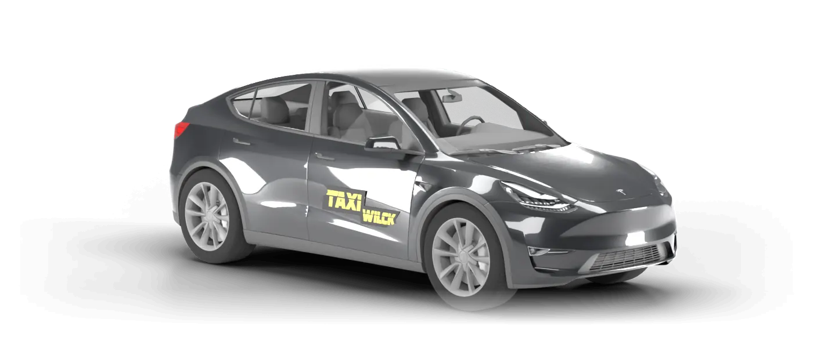

Taxi in Hagenow und Umgebung.
Pünktlich und zuverlässig – seit über 30 Jahren in und um Hagenow.
4,6 · 76 Google-Bewertungen
Das sagen unsere Fahrgäste.
Sehr netter Chef, gute Autos, pünktlich und sehr kundenorientiert.
Ein super und schneller Service, alles hat reibungslos und spontan geklappt.
Taxi aus dem Zug bestellt, Fahrzeug wartete schon auf mich bei der Ankunft.
Quelle: Google Maps, Stand Oktober 2026. Bewertungen von Google-Nutzern, die nicht von uns geprüft werden. Google und das Google-Logo sind Marken von Google LLC.
In drei Schritten zur Fahrt.
- 1
Anfragen
Rufen Sie uns an unter 03883 723240 oder senden Sie die Anfrage oben ab.
- 2
Wir bestätigen
Wir melden uns bei Ihnen und stimmen Zeit und Abholort ab.
- 3
Wir holen Sie ab
Pünktlich vor Ihrer Tür – und sicher ans Ziel.
Unter 03883-723240 kümmern wir uns um:
Gesundheit & Pflege
- Krankenfahrten aller Krankenkassen
- Fahrten zur Chemo- und Bestrahlungstherapie
- Kur- und Rehafahrten
- Fahrten zu ambulanten Tageskliniken
- Behindertentransporte
Taxi & Transport
- Großraumtransporte bis 8 Personen
- Flughafentransfer
- Bahntransfer
- Transport von Schülern und Kindergartenkindern
- Kleintransporte
Taxi in Hagenow und in der ganzen Umgebung.
Taxi Alt Krenzlin · Taxi Alt Zachun · Taxi Bandenitz · Taxi Belsch · Taxi Bobzin · Taxi Bresegard bei Picher · Taxi Dreilützow · Taxi Gammelin · Taxi Groß Krams · Taxi Hoort · Taxi Kirch Jesar · Taxi Kothendorf · Taxi Kraak · Taxi Kuhstorf · Taxi Melkof · Taxi Moraas · Taxi Neu Zachun · Taxi Parum · Taxi Pätow · Taxi Picher · Taxi Pritzier · Taxi Redefin · Taxi Steegen · Taxi Strohkirchen · Taxi Toddin · Taxi Vellahn · Taxi Warlitz · Taxi Warsow · Taxi Wittenburg
TAXI Wilck – seit über 30 Jahren
So lange steht dieser Name in und um Hagenow für die pünktliche und zuverlässige Personenbeförderung.
Ob Krankenfahrt, Flughafentransfer oder Schulweg: Rufen Sie uns an, wir kümmern uns.
Rufen Sie uns an.
03883 723240 Taxi- und Fuhrbetrieb Wilfried WilckInh. Yvonne Schomann
Am Hasselsort 4
19230 Hagenow
info@taxi-wilck.de
Wo geht's lang? Route in Google Maps ↗